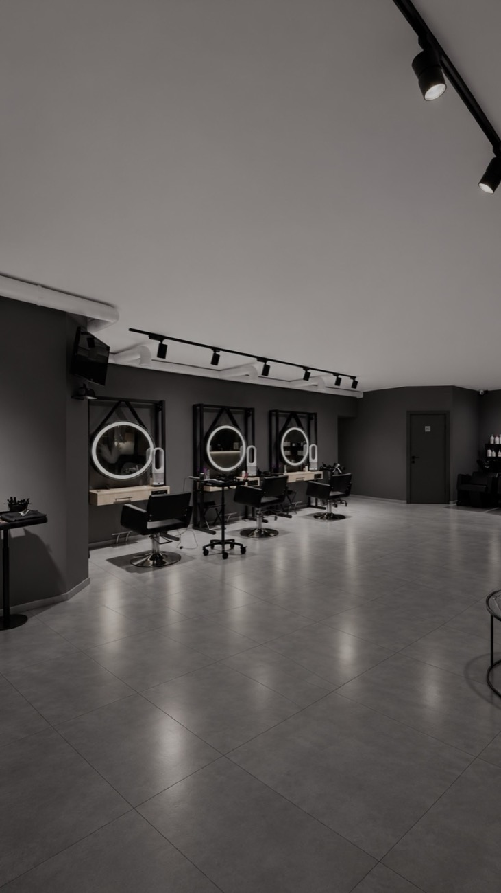
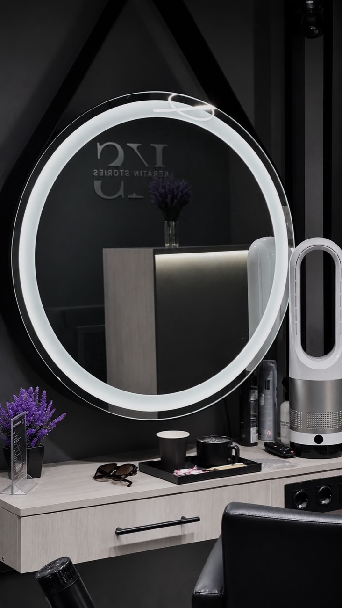
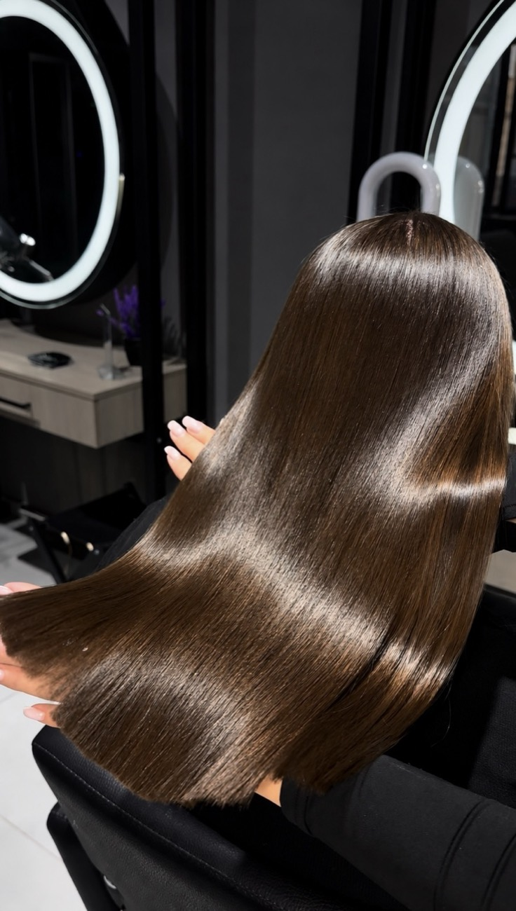
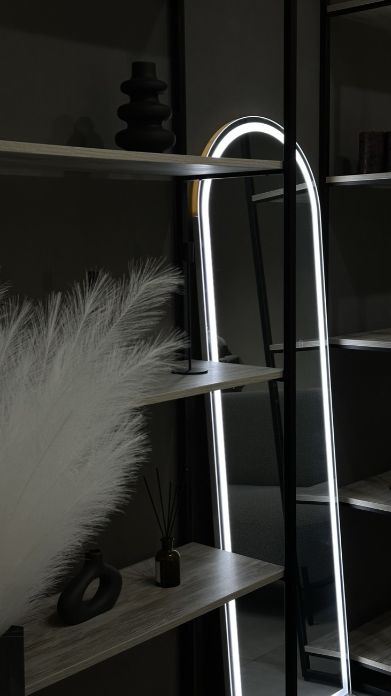
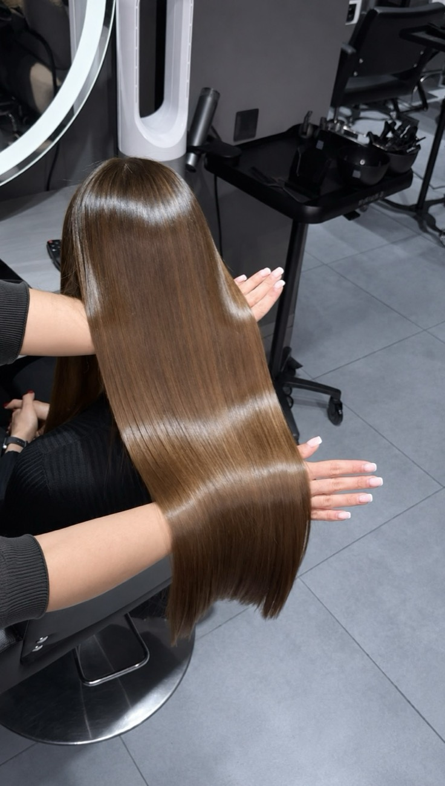
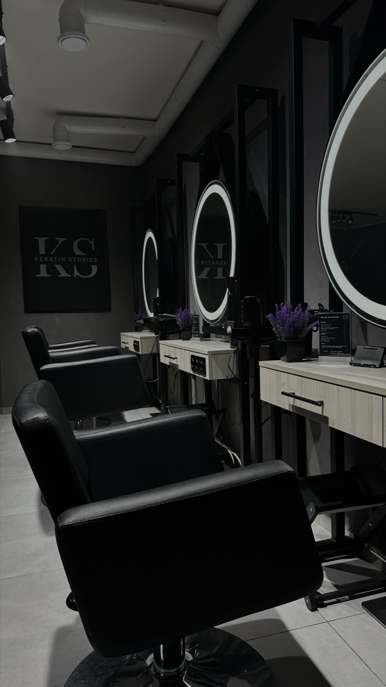
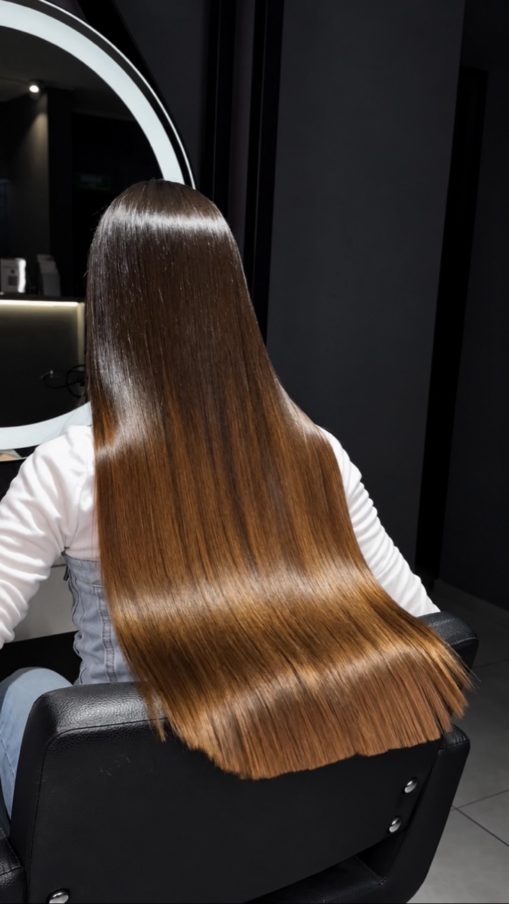
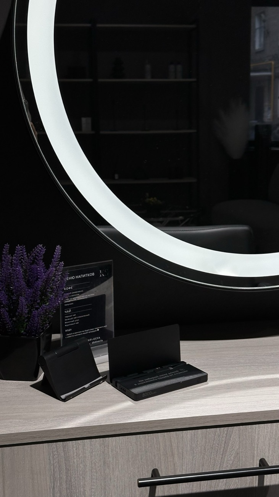
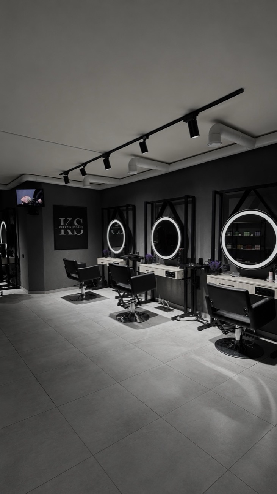

КЕРАТИН СТОРИС
Студия выпрямления и реконструкции волос
5,0Яндекс Карты · 252 отзыва«Хорошее место 2026»Услуги
Стоимость процедуры
Цена зависит от длины и густоты волос. Потяните линию среза на фото или ползунок — посчитаем по прайсу студии.
Перед процедурой мастер измерит длину и густоту и назовёт точную цену до начала работы. Выбор составов на цену не влияет. Свыше 70 см и наращённые волосы — по прайсу.
Видео наших работ
Акции
«КОМПЛЕКС»
Скидка на полировку волос против сечения и пилинг кожи головы при проведении в комплексе с другими процедурами
| Полировка, до 50 см | |
| Полировка, свыше 50 см | |
| Пилинг кожи головы |
Цены полировки — у мастера; у ТОП-мастера в комплексе 2 500 / 3 000 ₽.
О студии
Кератин Сторис — профессиональная студия выпрямления и реконструкции волос











Мы работаем уже более 9 лет, за это время мы смогли осчастливить тысячи клиентов!
С заботой о ваших волосах мы добиваемся «своего идеального результата» для каждой девушки: проводим подробные консультации, отвечаем на ваши вопросы, бережно подбираем процедуру и составы для неё, с любовью выполняем процедуру так, что каждая наша гостья ощущает себя «особенной».
Приглашаем вас в наши стены ощутить всё волшебство наших мастеров!
Почему мы?
- 01
Занимаемся реконструкцией волос с 2016 года
Мы знаем всё о волосах, об их структуре и работаем с волосами любой степени повреждения
- 02
Не ограничиваемся составами одного бренда
В нашей студии представлено более 40 различных составов ведущих брендов, что позволяет нам подобрать подходящий продукт для любого типа волос
- 03
Сервис
Меню напитков, приятная музыка, персональные вентиляторы на пультах управления, онлайн-запись 24/7, Wi-Fi, зарядки для телефонов, напитки с собой — мы работаем для вас
- 04
4000+
Довольных клиентов доказывают наш профессионализм и высший класс каждой оказанной услуги
Команда
Яндекс Карты · 320 оценок · 252 отзыва
🏅 «Хорошее место 2026»
«Волосы мягкие, гладкие, шелковистые. Даже уходить не хотелось!»
«Мастер внимательно оценила состояние волос и подобрала подходящие составы.»
«Заранее рассчитали стоимость и рассказывали о каждом этапе.»
«От природы пушистые и кучерявые волосы — нанопластика облегчила мне жизнь.»
Часто задаваемые вопросы
Выпрямление волос — это безопасно?
Да, процедуры по выпрямлению волос в руках опытного мастера не принесут волосам никакого вреда, зато подарят вам красивые и ухоженные волосы без укладок и утюжка сроком до 6 месяцев.
Кератин — это лечение/восстановление волос?
Выпрямления волос (горячие процедуры) — это не лечение и не восстановление. Основная задача этих процедур — визуал, красивый внешний вид волос, комфорт и удобство в повседневной жизни: нет необходимости в укладке и ежедневном выпрямлении, волосы всегда идеальны после простой сушки феном даже без расчёски и при любой погоде.
Если необходимо именно восстановление волос — это холодные процедуры без использования утюжка.
Какую процедуру выбрать?
Зависит от желаемого результата и состояния волос. Наши мастера проведут диагностику состояния волос перед процедурой и подберут для вас наиболее подходящую процедуру и состав.
Что такое подложка?
Подложка — это дополнительный уход перед горячими процедурами (кератиновое выпрямление и ботокс), который укрепляет и уплотняет повреждённые волосы, а также создаёт дополнительную защиту при термической обработке. Наносится непосредственно перед выпрямлением и прогревается под термошапкой.
Применяется на повреждённые, осветлённые и окрашенные волосы, если им требуется дополнительный уход и подготовка к выпрямлению, и позволяет выполнить горячую процедуру наиболее мягко.
Сколько держится результат?
Индивидуально и зависит от выбранной процедуры и последующего домашнего ухода, но в среднем срок носки процедур следующий:
- кератиновое выпрямление — 3–6 месяцев
- ботокс для волос — 1–3 месяца
- нанопластика — 4–6 месяцев
- холодное восстановление — 4–6 недель
Остаются ли заломы на волосах?
Кератин — это не цемент, ваши волосы сохраняют все те же свойства. Поэтому на волосах могут оставаться заломы от резинок и заколок, замятия после сна — это абсолютно нормально.
Чтобы убрать залом, слегка намочите прядь и высушите её феном. Волосы снова станут прямыми.
Есть ли противопоказания?
Противопоказания к горячим процедурам:
- механические повреждения кожного покрова головы
- заболевания кожи головы
- заболевания онкологического характера
- склонность к частой и обильной потере волос
- астматические заболевания
- аллергические реакции
- беременность и период кормления грудью
Если имеется хотя бы одно из противопоказаний, от процедуры кератинового выпрямления лучше отказаться. Напишите нам для консультации, и, если возможно, мы предложим варианты альтернативных процедур.
Обязательно ли пользоваться бессульфатным шампунем после процедуры?
Нет, использование бессульфатного шампуня не обязательно. Вы подбираете шампунь по типу вашей кожи головы.
Сколько будет стоить моя процедура?
Ориентир — в калькуляторе, все цены — в прайсе. В кресле перед началом процедуры мастер измерит длину и густоту ваших волос, обсудит с вами пожелания и что будет включать в себя процедура, и обязательно озвучит полную точную стоимость до начала работы.
Есть ли гарантия на процедуры?
На все горячие процедуры (ботокс для волос, кератиновое выпрямление, тотальная реконструкция, нанопластика) гарантия — 1 месяц со дня выполнения процедуры.
Если в течение месяца появилась волна или пух после сушки волос, напишите нам: мы пригласим вас в студию, и если действительно выявится недочёт в работе, переделаем работу полностью бесплатно.
Контакты
Адрес
г. Москва, ул. Большая Грузинская, 12. Вход со двора.
м. Баррикадная / Краснопресненская
Телефон
+7 (905) 702-56-12График работы
Ежедневно с 10:00 до 22:00